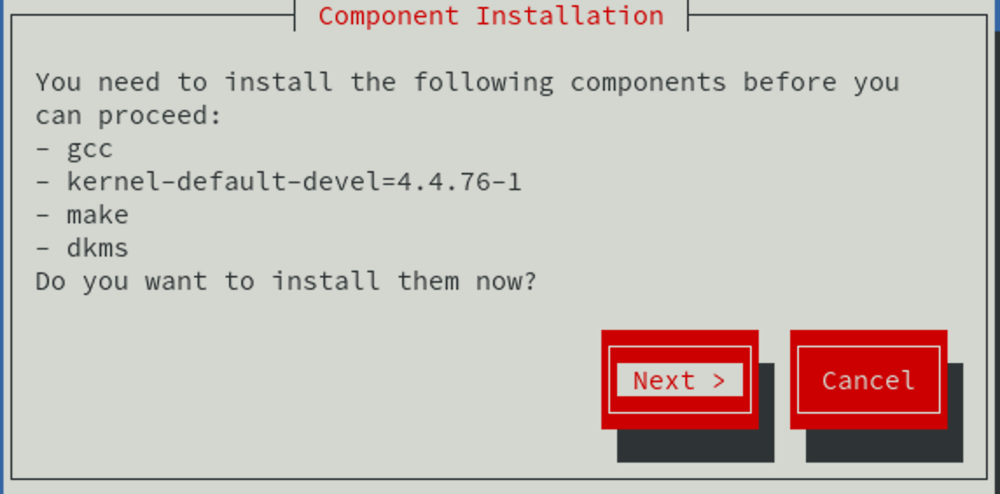
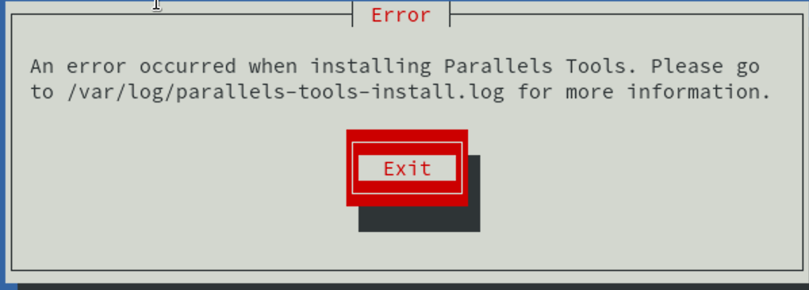
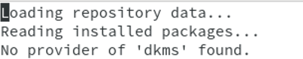
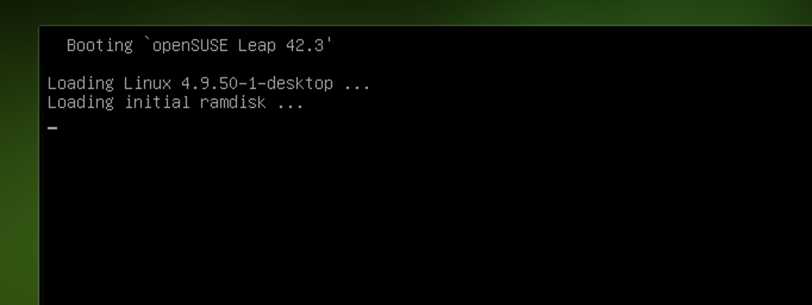

openSUSE 下安装 Parallels Tools
文章目录
Parallels Desktop 是 macOS 上一款优秀的虚拟机软件，支持各种操作系统。然而想要在其上面愉快的使用桌面操作系统，还需要在虚拟机上安装 Parallels Tools 这个工具。在 Windows 上和 Ubuntu 以及 Centos 上安装还是非常简单，然而我在 openSUSE 上尝试却失败了，寻找良久才找到解决方法。遂以此文纪念我踩过的坑，以便给后人提供参考，而不会错过一些美好的事情。
安装 Parallels Tools 初试
在 Parallels Desktop 上成功安装好 openSUSE 后，把 Parallels Tools 挂载到系统（不要和我说你不知道怎么操作）。进入挂载的目录，并执行安装程序
|
|
输入密码等待程序启动，点击 next 等一小会,出现如下如所示，点击 next 安装。

等待一杯咖啡的时间，如果一杯喝完没有提示安装失败，就再喝一杯。两杯咖啡下肚，终于出现如下错误

它告诉我安装失败了，去 /var/log/parallels-tools-install.log 下看更多的信息。直觉告诉我看了可能也没什么用。不过还是去看看。
打开文件，映入眼帘，这么明显（此处略去后面的提示）

它告诉我 dkms 找不到，据我以前安装 Ubuntu 的经验很可能是这货的问题，于是安装 dkms 。
安装 dkms
|
|
提示找不到这个软件包，估计 Parallels Tools 也是调用这条命令安装的吧，所以安装失败。
既然没有，我们只好从别的地方找一个，在官方软件包中搜索 dkms，还真找到了
 点击一键安装，待安装好 dkms 之后，重新执行上一小节的操作。换来的还是一样的结果，安装失败。
于是我决定重启系统再安装一次，结果还是一样，一点都不意外。心灰意冷的我不断在网上找相关的问题，一次一次的尝试，结果总是那么的相似，都没有找到解决方法。直到我在 美丽新世界：linux 下的惬意生活寻找答案的时候，偶然看了一下开机过程，发现了解决问题的契机。
点击一键安装，待安装好 dkms 之后，重新执行上一小节的操作。换来的还是一样的结果，安装失败。
于是我决定重启系统再安装一次，结果还是一样，一点都不意外。心灰意冷的我不断在网上找相关的问题，一次一次的尝试，结果总是那么的相似，都没有找到解决方法。直到我在 美丽新世界：linux 下的惬意生活寻找答案的时候，偶然看了一下开机过程，发现了解决问题的契机。
发现问题
在美丽新世界：linux 下的惬意生活这篇文章中说道
- kernel-default 是系统默认版内核。
- kernel-desktop 在 kernel-pae 基础上针对桌面进行优化，并屏蔽了只有服务器上才会使用的内核功能，提升启动速度和响应速度
于是我在开机的时候观察到
 openSUSE 默认的果然是 kernel-default 的内核。尝试一下 kernel-desktop 兴许会成功。
于是便尝试安装 kernel-desktop 的内核。
openSUSE 默认的果然是 kernel-default 的内核。尝试一下 kernel-desktop 兴许会成功。
于是便尝试安装 kernel-desktop 的内核。
尝试解决
在默认的源里是没有 kernel-desktop 的安装包，还需要使用如下命令把他添加进去,并安装 kernel-desktop
|
|
第一次安装 kernel-desktop 可能会提示失败，输入 r 回车，重试一遍（也许多遍）就可成功。
安装之后重启系统

现在默认就是从 kernel-desktop 启动了。
启动之后尝试安装 Parallels Tools，居然成功了。不过没有安装 dkms 它还是推荐安装一下，说明 dkms 不是必须的。之前的错误提示，成功的误导了我。我表示很无奈。
 安装成功后，终于可以愉快的玩耍了。
安装成功后，终于可以愉快的玩耍了。
总结
- 安装好系统后，先不要安装 Parallels Tools。 直接安装 kernel-desktop。
- 安装好 kernel-desktop 后再安装 Parallels Tools。